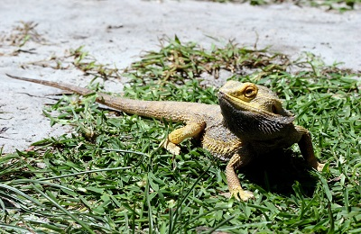

Russ is a blind deer. He was brought to us by a hunter who found him wandering in circlesMeet Nugget. He is learning how to climb trees and will be released in a few weeks.This is Ellie. She was neglected by her owner and malnourished when she was rescued.Say hi to Vinny. His back legs were injured, making it difficult for him to get around.Rosie was just about a baby when she arrived. Now she has babies.Squirt is one of Rosie's babies.Muffin has come a long way. She was very thin when she was rescued.Poor Harley was rescued when he was just three weeks old. He is getting big and will be released in about a month.

Gizmo was abandoned by his owner and is available for adoption.Peaches was also abandoned by his owner. He loves to talk.Sonny was just a baby when he was brought to us for rehabilitation.Poor Victor has "shell pyramiding", a form of bone disease.